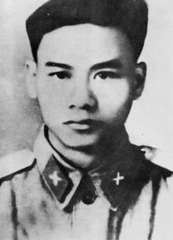
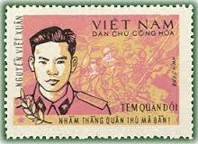

Nguyễn Viết Xuân sinh năm 1934, quê tỉnh Vĩnh Phúc.Xuất thân trong một gia đình nông dân nghèo, lên 7 tuổi, Nguyễn Viết Xuân đã phải sống một cuộc đời đi ở kéo dài suốt 10 năm. Khi vừa tròn 18 tuổi, anh đã dũng cảm vượt vùng tạm chiến ra vùng tự do, xin đi bộ đội. Nhập ngũ tháng 11 năm 1952, lúc đầu, anh làm chiến sỹ trinh sát, rồi tiểu đội trưởng trinh sát, trung đội trưởng pháo cao xạ, sau làm chính trị viên đại đội.
Trong chiến dịch Điện Biên Phủ, anh đã cùng đồng đội dũng cảm chiến đấu, không ngại hy sinh, gian khổ, góp phần vào thắng lợi chung của chiến dịch, giải phóng miền Bắc, chấm dứt ách thống trị của thực dân Pháp trên đất nước ta, đưa cách mạng Việt Nam chuyển sang một giai đoạn mới.
Ngày 18 tháng 11 năm 1964, trong trận chiến đấu này, Mỹ đã huy động nhiều tốp máy bay đánh phá ác liệt vùng ChaLo thuộc miền tây tỉnh Quảng Bình. Ngay đợt đầu, ba chiếc máy bay F.100 bất ngờ lao vào trận địa của đại đội Nguyễn Viết Xuân. Bất chấp nguy hiểm, Nguyễn Viết Xuân lao ra khỏi công sự, đứng bên khẩu đội 3 đĩnh đạc tỏ rõ khí phách và hô lớn: “Nhằm thẳng quân thù, bắn!”
Tấm gương chiến đấu anh dũng quên mình vì nhiệm vụ của đồng chí được cán bộ chiến sĩ trong đơn vị rất cảm phục, cả đại đội 3 đã dấy lên một cao trào thi đua, kiên quyết chiến đấu lập công, trả thù cho người chính trị viên yêu quý của mình. Ngày 1 tháng 1 năm 1967, Nguyễn Viết Xuân đã được nhà nước truy tặng danh hiệu anh hùng lực lượng vũ trang nhân dân.
Bài viết của Nguyễn Thị Thu Hương
Học sinh lớp 10A2 - Trường THPT Nguyễn Công Trứ